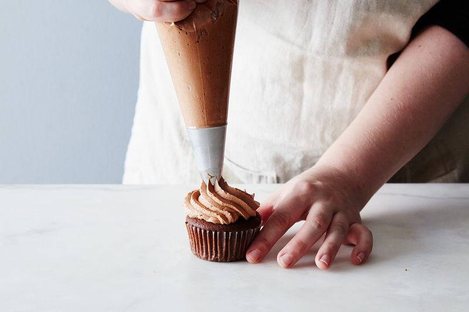

Cupcake Heaven began when Riley started making cupcakes for his friends every time they got their hearts broken or lost a job. The idea was to bring his friends from emotional hell, to Cupcake heaven, which, while not the same as actual heaven, is a blurry swirl of contentment that provides passing emotional release. Riley's cupcake creations were adored by his friends, and soon everyone in his circle wanted in on them. And because we live in cruel and god-less world, there was plenty of need for cupcakes. Eventually what started in Riley's operation outgrew his personal oven capacity. That's when he remembered about capitalism and opened up this shop. We hope you enjoy the blurry swirl!
Our cupcakes are unique in that they are made only from organic materials that have been blessed by a rabbi, monk, priest, imam, prophet, and James Comey now that he's out of a job. We have all those folks standing in an assembly line doing the blessing, which makes for some interesting side conversations.
The types of cupcakes we serve include....
To get in touch with Riley or any of the folks doing the assembly line blessing: email the crew
Explore fun facts about cupcakes here.